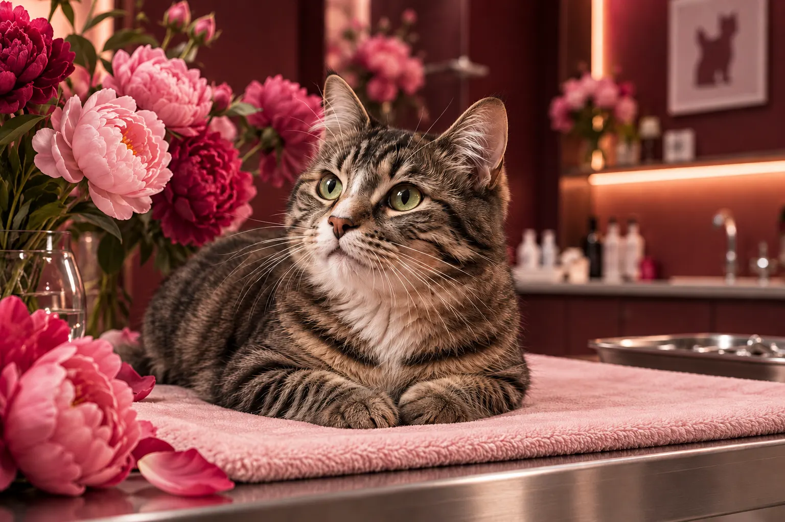
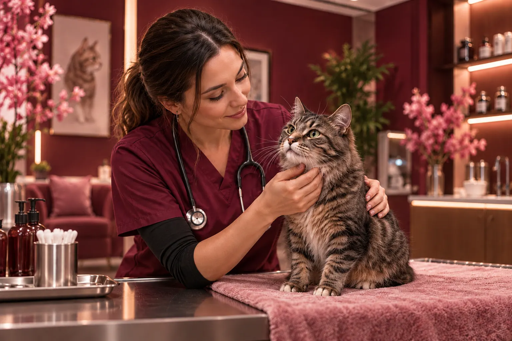
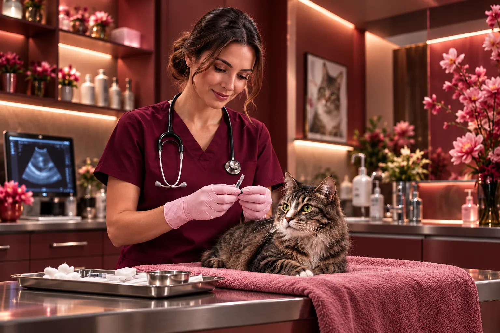
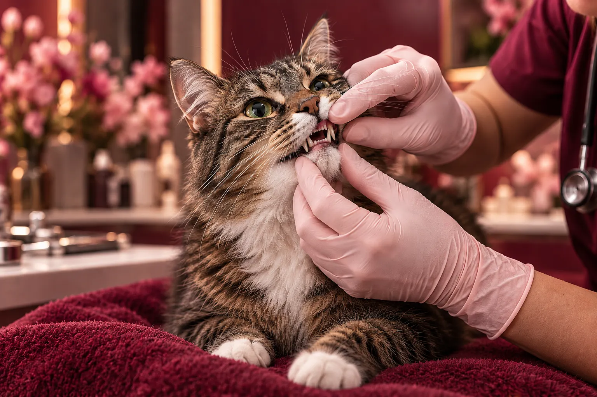
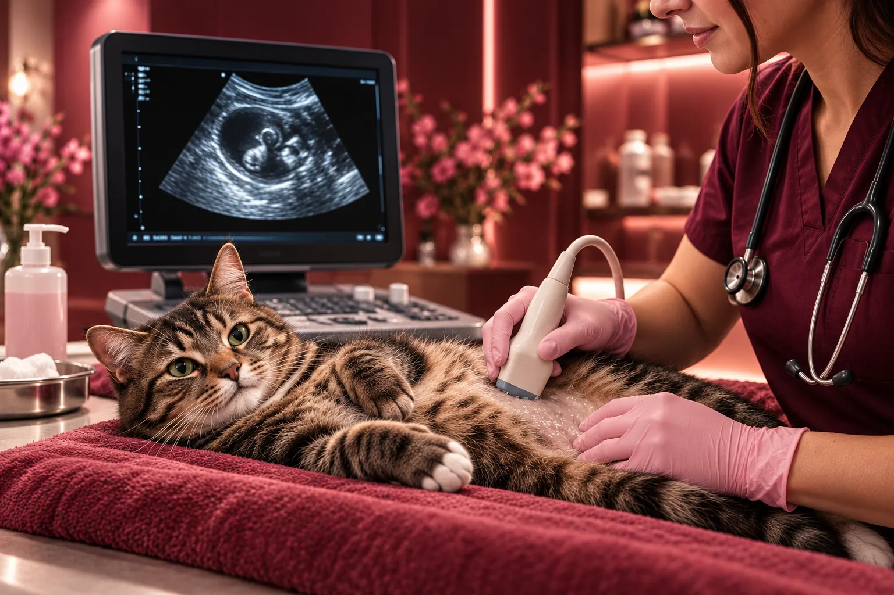
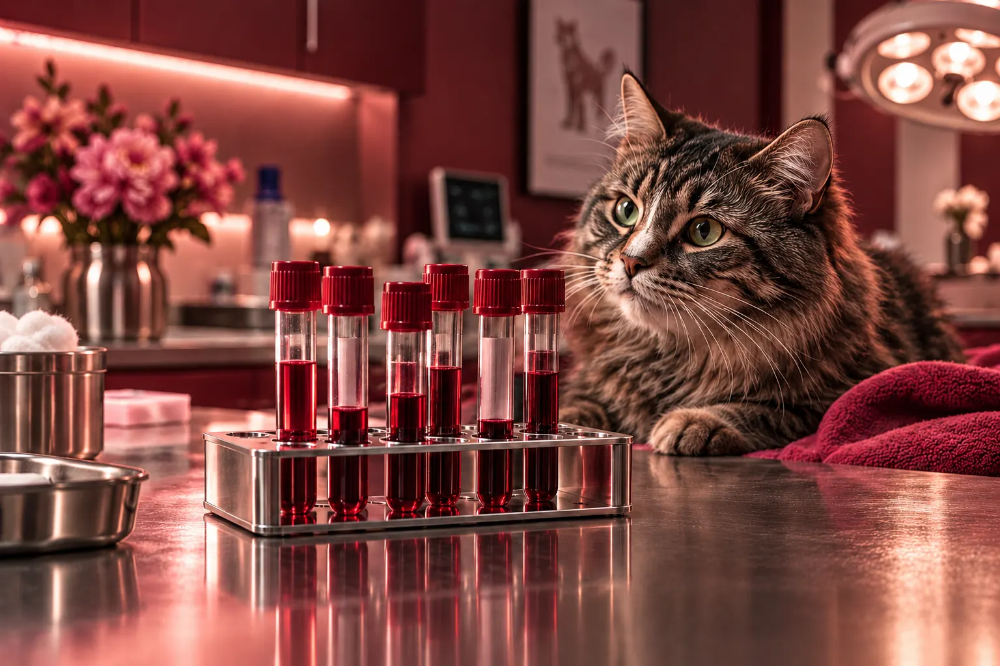

Naše služby
Specializovaná péče.
Výhradně pro kočky.

Prevence
Očkování, odčervení, preventivní prohlídky.
Více o péči

Kočičí medicína
Diagnostika a léčba onemocnění koček.
Více o péči

Chirurgie
Měkkotkáňové operace, oftalmologické zákroky.
Více o péči

Dentální péče
Ošetření zubů a dásní, odstranění zubního kamene.
Více o péči

Zobrazovací metody
RTG, ultrazvuk a navazující diagnostika.
Více o péči

Laboratoř
Krevní testy, vyšetření moči a další.
Více o péči

Rehabilitace
Fyzioterapie a péče při rekonvalescenci.
Více o péči

Behaviorální péče
Konzultace problémového chování.
Více o péči